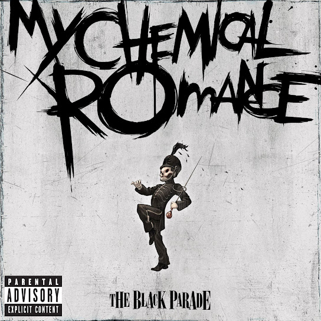

The Black Parade
Albúm de My Chemical Romance
The Black Parade es el tercer álbum de estudio de la banda estadounidense de rock My Chemical Romance. Publicado el 23 de octubre de 2006 por la discográfica Reprise Records, sus canciones están asociadas a los géneros rock alternativo, emo, pop punk, ópera rock y power ballad. Su producción estuvo a cargo de Rob Cavallo, quien también ha trabajado en la mayoría de los discos de Green Day desde 1994. El disco cuenta con la colaboración de la actriz y cantante estadounidense Liza Minnelli en la canción «Mama». Al igual que las dos producciones anteriores de la banda, este es un álbum conceptual, centrado esta vez en la historia de un personaje moribundo conocido como el Paciente, que sufre de cáncer. Durante el disco, el Paciente descubre que su enfermedad es terminal, y realiza una reflexión sobre su vida, mientras su muerte va apareciendo representada por un desfile. Salvo algunas excepciones, The Black Parade ha sido evaluado positivamente por los críticos, y la edición especial del álbum fue nominada a un premio Grammy.